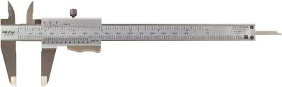
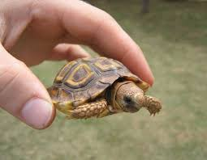
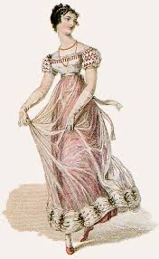
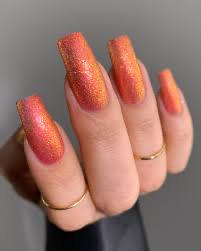

abstinent
['æbstinənt]
stin(): n. 永续台湾资讯网
stine(): （人名）.斯泰恩
tine(tain): n. 齿, 尖头
arachnid
[ə'ræknid]
arac(): 航空航天研究应用中心（Aerospace Research Application Center）\n阵列简化分析电路（Array Reduction Analysis Circuit）
broach
[brəutʃ]
breach: n.裂缝，缺口；v.打破，裂开；违背
brooch: n. 胸针
bleach: v.漂白
blotch: n.(皮肤上的)红斑点；(墨水等)大斑点
brace: v.使稳固，架稳；n.支撑物
brash: a.性急的；无礼的
crouch: v.蹲伏，弯腰
grouch: n.牢骚，不满
preach: v.传教，讲道
botch: v. 笨手笨脚地)弄坏某事
poach: v. 偷猎，窃取
roach(rәutʃ): n. 斜齿鳊\nvt. 使成凹状
calamity
[kə'læmiti]
clarity: n.清楚
amity(['æməti]): n.(人或国之间的)友好关系
alam(): n. 阿拉姆（姓氏）
alami(): n. (Alami)人名；(阿拉伯、以、法、西、芬)阿拉米
amit(): n. 阿米特（男子名）
amity('æmiti): n. 友好, 亲善关系
cala('kælә): n. 熏腌猪肩下肉
calami('kæləmai): n. 省藤属植物, 菖蒲, 羽根( calamus的名词复数 )
mity('maiti): a. 多螨的
canard
[kæ'nɑ:d]
canary: n.金丝雀；女歌星
candid: a.率直的
coward: n.胆小鬼
hazard: n.危险
anar(): n. (Anar)人名；(土、阿塞、土库)阿纳尔
cana('keinә): n. 迦南（巴勒斯坦北部的一个村庄）
nard(nɑ:d): n. 甘松, 甘松油膏\n[医] 甘松香, 甘松
congregate
['kɔŋgrigeit]
gate(geit): n. 门, 牌楼, 大门, 通道, 闸\nvt. 装门于\n[计] 门; 栅
greg(greg): n. 格雷格（男子名, 等于Gregory）
rega(): n. 君子（英国音响品牌）；君威（别克的汽车名）
consonance
['kɔnsənəns]
consonant: a.调和的，一致的
ance(eins): n. 状态；性质；情况
nanc(): [医][=non-adrenergic,non-cholinergic]非肾上腺素能，非胆碱能
nance('nɑ:nsei): n. 女人气的男人, 搞同性关系的人
onan(): 油浸自冷（变压器冷却方式，Oil Natural Air Natural）
sonance('sәjnәns): n. 有声状态, 声音
deference
['defərəns]
defer([di'fə:]): v.推延；听从
defer(di'fә:): vi. 推迟, 延期, 听从\nvt. 使推迟, 使延期
ence(): 具...的行为,状态
fere(fɪə): n. 伴侣, 配偶
ferenc(): n. (Ferenc)人名；(德、匈、罗、塞、波、捷)费伦茨
ference(): [人名] 费尔伦斯
rence(rens): 盲目降落区的障碍物间隔
despondent
[dis'pɔndənt]
respondent: n.被告
den([den]): n.兽穴，窝
dent([dent]): n.缺口，凹痕；v.弄凹
dent(dent): n. 凹痕\nvt. 使凹下, 削弱\nvi. 塌陷
desp(): [医][=decaspiride]苯螺旋酮，螺葵酮
despond(di'spɒnd): vi. 沮丧, 失去勇气\nn. 失去勇气, 失望
espo(): [医]利血保（重组人类红细胞生成素α注射剂）<抗贫血药>
pond(pɒnd): n. 池塘\nv. 筑成池塘
dilettante
[`dili'tænti]
tan([tæn]): v.鞣(革)
ante('ænti): n. 赌注\nv. 下赌注
dile(): [医][=drug-induced lupus erythematosus]药物诱发红斑狼疮
Lett(let): n. 列托人, 列托语
letta(): [地名] [喀麦隆] 莱塔
Tante(): n. (Tante)人名；(西)坦特
dissemble
[di'sembl]
assemble: v.集合，聚集
Diss(dis): 迪丝草纤维
disse(): [医]Disse腔
semble('sembl): [律]看来好象
召集之前先隐藏
emollient
[i'mɔliənt]
emolument: n. 报酬，薪水
lien(['li(:)ən]): n.扣押权；留置权
emol('i:mɔl): 伊莫(皮肤润滑剂)
lien('li:әn): n. 留置权, 扣押权\n[医] 脾
moll(mɒl): n. 情妇, 妓女
molli(): n. (Molli)人名；(意)莫利
mollie('mɔli): n. 帆鳍鳉（等于mollienisia）
mollient('mɔliәnt): n. 软化剂, 缓和剂\nv. 使柔软
olli(): n. (Olli)人名；(芬、瑞典)奥利
Ollie('ɔli): 奥利(男子名, Oliver 的昵称)
ephemeral
[i'femərəl]
hem([hem]): v.包围；n.袖边，边缘；interj.吞吞吐吐地说
ephemera(i'femәrә): n. 生命短促的人(或物), 蜉蝣
heme(hi:m): n. 血红素\n[化] 血红素; 亚铁原卟啉
feign
[fein]
deign: v.屈尊，惠允(做某事)
reign: n.统治时期；王朝；领域
align: v.将某物排列在一条直线上；与某人结盟
benign: a.慈祥的
feigned: a.假装的；不真诚的
feint: v./n.佯攻，佯击
felon: n.重罪犯
fern: n.羊齿植物，蕨

fig: n.无花果；一点儿
rein: n.缰绳；v.控制
flabby
['flæbi]
flaggy: a.枯萎的；松软无力的
lobby: n.大厅，休息厅
flay: v. 剥皮；诈取；严厉指责
shabby: adj. 破烂的；卑鄙的
abby('æbi): n. 艾比（女子名）
flab(flæb): n. 松弛
fraught
[frɔ:t]
drought: n.干旱；干旱时期
freight: n.货物；v.装货于(船等)
wrought: a.做成的，精炼的
aught(ɒ:t): n. 任何事物, 零
frau(frau): n. （德）夫人；已婚的女人
gaucherie
[gəuʃə'ri:]
gauche([gəuʃ]): adj. 笨拙的，不会社交的
auch(): n. 欧什（法国西南部热尔省首府）
cher(): n. 谢尔河（法国）
cheri(): n. 谢利（电影名）
cherie(ʃəri): n. 切丽（女子名）
Erie('iәri): n. 伊利(湖)
gauch(): [人名] 高奇
gauche(gәuʃ): a. 缺乏社经验的, 笨拙的, 粗鲁的, 无礼的, 偏转的
gaucher(): n. 高雪氏症
grueling
['gruəliŋ]
rue([ru:]): n.后悔，遗憾
elin(): n. 伊林（公司名）
eling(): [地名] [英国] 伊灵
grue(gru:): vi. 发抖\nn. 战栗
gruel('gru:әl): n. 稀粥\nvt. 使极度疲劳, 惩罚
ling(liŋ): n. 鳕鱼, 帚石南
ruel(): [地名] [加拿大] 鲁埃尔
havoc
['hævək]
avow: v.承认；公开宣称
halo: n.(日、月等)晕，神像之光环
haven: n.安息所，避难所
immolate
['iməuleit]
isolate: v.孤立；将…从其种群中隔离
insolate: v. 使曝晒
late(leit): a. 迟的, 晚的, 已故的\nadv. 很晚, 很迟, 晚
mmol(lm): [医][=millimol(e)(one-thousandth of a gram molecule)]毫克分子，毫摩尔（千分之一克分子）
mola('mәulә): [动]翻车鱼
杀一个mmo 哞🐮焚祭祀
impassive
[im'pæsiv]
impasse: n.僵局；死路
impulsive: a.易冲动的
massive: a.巨大的，厚重的
passive: a.被动的，缺乏活力的
imp([imp]): n.小鬼；顽童
passive(['pæsiv]): a.被动的，缺乏活力的
assi(): n. (Assi)人名；(法、意、阿拉伯、科特)阿西
Mpas(): (MPA 的复数) [化] 多光子吸收
pass(pæs): n. 经过, 要隘, 途径, 通行, 护照, 及格\nvt. 经过, 越过, 通过, 批准, 度过, 传递, 忽略\nvi. 经过, 变化, 流通, 及格, 宣判, 终止, 消逝, 被忽略, 不叫牌, 传递\n[计] 遍
passive('pæsiv): a. 消极的, 被动的, 冷漠的, 顺从的, 无源的\n[医] 被动的
lassitude
['læsitju:d]
latitude: n.言行自由；纬度
assi(): n. (Assi)人名；(法、意、阿拉伯、科特)阿西
lass(læs): n. 少女, 爱人, 情妇
lassi(ˈlæsi): n. 印度风味, 用酸奶制的甜品
situ(): n. 原地
luminary
['lju:minəri]
culinary: a.厨房的；烹调的
seminary: n.神学院
lumina('lu:minә): 腔, 流明(光通量单位)\n[医] 腔, 流明(光通量单位)
mina('mainә): n. 迈纳(古希腊单位)
minar(mi'nɑ:): n. (尤指印度的)塔
nary('nεәri): a. 连…也没有的
malcontent
['mælkən'tent]
content([kən'tent]): a.知足的，满意的；n.内容；满意
alco(): n. 艾可（美国机械公司）
alcon(): n. (Alcon)人名；(法、西)阿尔孔
conte(kuŋt): n. 短篇小说
content(kәn'tent): n. 内容, 满足, 意义, 要旨\na. 满足的, 满意的\nvt. 使...满足, 使...安心\n[计] 内容
Malc(): n. (Malc)人名；(波)马尔茨
tent(tent): n. 帐篷, 帷幕, 住处, 塞条, 塞子\nvi. 住帐蓬, 宿营, 暂时居住\nvt. 用帐篷遮盖, 使住帐篷, 用塞条嵌入
meek
[mi:k]
meet: a.合适的
reek: v.发臭味；冒烟
peek: v. 偷看
creek: n.小湾，小溪
deed: n.行为；(土地或建筑物的)转让契约、证书
heed: v.注意，留心；n.关心
jeer: v.嘲笑
jerk: n./v.突然猛拉
leak: v.泄漏；n.泄漏；漏出量，漏洞
leer: v.斜眼看，送秋波
mask: n.假面具；v.隐藏(感情)
mean: a.卑贱的，吝啬的
meld: v.(使)混合，(使)合并
mend: v.修改，改进
mesa: n.高台地，平顶山
mesh: v.用网捕捉；齿合
mete: v.给予，分配；测量；n.边界
milk: v.榨取
mock: v.嘲笑；模仿地嘲弄
peak: v.憔悴，消瘦
peck: v.啄食；轻啄
peel: v.削去…的皮；剥落；n.外皮
peer: n.同等之人，同辈
reed: n.芦苇；簧片
reel: n.卷轴，旋转；v.卷…于轴上
seep: v.(液体等)渗漏
veer: v.转向，改变(话题等)
weed: n.杂草，野草；v.除草
beet: n. 甜菜

mien: n. 风采，态度
peep: n./v. 瞥见，偷看；初现
teem: v. 充满；到处都是；v. 下倾盆大雨
trek: v. 艰苦跋涉
mesmerism
['mezmərizəm]
mesmerize: v. 对…催眠；迷住
eris('eris): n. [希神]厄里斯（不和的女神, 夜女神的女儿）
Esme('ezmi): n. 埃斯米(Esmeralda的昵称)(f.)
merism('merizәm): [植]分生性
mesmer(): 梅斯梅尔（人名）
muzzy
['mʌzi]
murky: a.黑暗的；朦胧的
muddy: adj. 多泥的；浑浊的，不纯的
muggy: adj. (天气)闷热而潮湿的
musty: adj. 发霉的，有霉臭的
muzz(mʌz): vt. 使发呆, 使迟钝
pallid
['pælid]
ballad: n.歌谣，小曲
pall: v.令人发腻，失去吸引力
pall([pɔ:l]): v.令人发腻，失去吸引力
alli(): n. 阿莱（一种减肥药）
pall(pɒ:l): n. 棺罩, 柩衣, 遮盖物\nvi. 失去吸引力, 乏味\nvt. 覆盖, 使笼罩阴影, 使乏味
paltry
['pɔ:ltri]
pantry: n.食品室
pastry: n.糕点，点心
palmy: a.繁荣的；棕榈的
palter: v.含糊其词
parry: v.挡开，避开(武器，问题等)
sultry: a.闷热的；(人)风骚的
precipitant
[pri'sipitənt]
precipitate: v.加速，促成；a.鲁莽的
tan([tæn]): v.鞣(革)
pita('pi:tə): n. （希腊和中东地区的）皮塔饼
preci(): [地名] [意大利] 普雷奇
precipitation
[pri`sipi'teiʃən]
ation(eɪʃən): 增强辐射, 文明阶段
pita('pi:tə): n. （希腊和中东地区的）皮塔饼
preci(): [地名] [意大利] 普雷奇
tati(): n. (Tati)人名；(法、刚(布)、意、印尼)塔蒂
tation(): 冰雹；水能计算；初生空化
tion(): n. 象征式互动；支票电托收
quisling
['kwizliŋ]
sling([sli6]): v. 投掷，扔；n. 吊腕带，吊索
isling(): 使成为岛屿（isle的现在分词形式）
ling(liŋ): n. 鳕鱼, 帚石南
quis(kwis): 奎斯(欧洲的一种丘鹬)
slin(): [医] 悬带
sling(sliŋ): n. 投石器, 抛掷, 吊索, 吊钩\nvt. 用投石器投掷, 用吊钩吊上, 吊起
raillery
['reiləri]
artillery: n. 大炮; 炮兵
ail([eil]): v.生病
rail([reil]): n.栏杆；铁轨；v.咒骂，猛烈指责
iller(): n. 伊勒河（德国境内的河流名）
rail(reil): n. 横杆, 围栏, 栏杆, 铁轨, 扶手, 秧鸡\nvt. 以横木围栏, 给...铺铁轨\nvi. 责骂, 抱怨
respite
['respait]
despise: v.鄙视，藐视
repine: v.不满，心中抱怨
repute: n.名声，名誉
requite: v.报答；报复
reside: v.居住
restive: a.不安静的，不安宁的
spite: n.怨恨，恶意
spite([spait]): n.怨恨，恶意
resp(): 反映
spit(spit): n. 唾液, 唾吐, 小雨, 炙叉, 一铲的深度\nvt. 唾吐, 吐出, 降小雨, 用炙叉穿过\nvi. 吐唾沫, 吐痰, 唾弃, 飘霏霏细雨
spite(spait): n. 恶意, 怨恨, 使人烦恼的事物\nvt. 故意刁难, 欺侮
shingle
['ʃiŋgl]
hinge: n.铰链；关键
mingle: v.混合
singe: v.(轻微地)烧焦，烫焦
swindle: v.诈骗
spangle: n. (缝在衣服上的)金属片；v. 闪光
hingle(): [人名] 欣格尔
ingle('iŋgl): n. 炉火, 壁炉
shin(ʃin): n. 胫骨\nv. 攀, 爬
shing(): n. （汉）成
solvent
['sɔlvənt]
salient: a.显著的，突出的
vent([vent]): v.发泄(情绪)；开孔；n.孔，口
solve(sɒlv): vt. 解决, 付给, 溶解\nvt. 求解\nvi. 求解\n[计] 求解
vent(vent): n. 排气口, 出口, 通风孔, 发泄\nvt. 发泄, 排出, 给...开孔
speleology
[`spili'ɔlədʒi]
log([lɔg]): n./v.日志，记录；n.一段大木头；圆木
logy('lәugi): a. 迟缓的, 呆呆的
ology('ɒlәdʒi): n. 学问, 学说
pele(pi:): vt. 剥；削；剥落
spurious
['spjuəriəs]
specious: a.似是而非的；华而不实的
spacious: adj. 广阔的，宽敞的
spur([spə:]): v.刺激，激励；用马刺刺马
IOUs(): suff. 有…性质的；属于…的；如…的
puri('pu:ri): n. [印尼]宫, 宫殿
riou(): [人名] 里乌
spur(spә:): n. 马刺, 刺激物, 鼓舞\nvt. 刺激, 激励, 用马刺策(马)前进\nvi. 用马刺驱马, 疾驰
striate
['straieit]
striated: a.有条纹的
serrate: a.锯齿状的
stride: v.大步行走
strife: n.纷争，冲突
strive: v.奋斗，努力
trite: a.陈腐的，陈词滥调的
iate(): 伊利诺伊州英语教师协会(Illinois Association of Teachers of English)\n国际戒酒教育协会(International Association for Temperance Education)
stria('straiә): n. 线条, 条纹\n[医] 纹
tria(): [医] 试验
supple
['sʌpl]
ripple: v.起涟漪；n.细浪，涟漪
rumple: v.弄皱，弄乱
staple: n.主要产品
stipple: v.点画，点描
subtle: a.微妙的，精巧的
supine: a.仰卧的；懒散的
topple: v.倾覆，推倒
tipple: v. 酗酒；n. 烈酒
suppl('sʌpl): [医]供给，输送，电源
tendentious
[ten'denʃəs]
sententious: adj. 好说教的；简要的
den([den]): n.兽穴，窝
dent([dent]): n.缺口，凹痕；v.弄凹
tend([tend]): v.照料，看顾
dent(dent): n. 凹痕\nvt. 使凹下, 削弱\nvi. 塌陷
ende(): [地名] [印度尼西亚] 英德
IOUs(): suff. 有…性质的；属于…的；如…的
tend(tend): vi. 走向, 有某种的倾向, 易于, 照顾, 注意\nvt. 照料, 护理
tende(): [地名] [法国] 唐德
thwart
[θwɔ:t]
tart: a.酸的；尖酸的
wart(wɒ:t): n. 疣, 瘤\n[医] 疣, 肉赘
vacillate
['væsileit]
oscillate: v.摆动；犹豫
cill(sɪl): [法]窗台; 岩床; 基石; 门槛
Cilla(): n. (Cilla)人名；(意)奇拉；(西)西利亚
late(leit): a. 迟的, 晚的, 已故的\nadv. 很晚, 很迟, 晚
acarpous
[ei'kɑ:pəs]
carp([kɑ:p]): n.鲤鱼；v.吹毛求疵
acar(): n. (Acar)人名；(土)阿贾尔；(阿拉伯、罗、法)阿卡尔
carp(kɑ:p): n. 鲤鱼\nvi. 吹毛求疵, 挑剔
apprise
[ə'praiz]
appraise: v.评价，鉴定
appease: v.使平静，安抚
reprise: n.(音乐剧中)乐曲的重复；重复
prise(praiz): vt. 撬, 撬开, 撬动
rise(raiz): n. 上升, 增加, 上涨, 高地, 升高, 出现\nvi. 升起, 起身, 起立, 上升, 上涨, 增长, 高耸, 起义, 浮现\nvt. 使飞起
astray
[əs'trei]
stray: v.偏离，迷路；a.迷了路的；零落的
array: v.部署；n.陈列；大批
assay: v./n.试验，测定
betray: v.背叛；暴露
pastry: n.糕点，点心
stray([strei]): v.偏离，迷路；a.迷了路的；零落的
Astra(): n. 阿斯特拉（英国伏克斯豪尔）；太阳白
stra(st'rə): [医]（复strae）横纹，纹，条纹，线条，陷线（昆虫），壳纹，壳线间隙
stray(strei): n. 走失的家畜, 浪子\na. 迷途的, 偶然的\nvi. 迷路, 彷徨, 流浪
tray(trei): n. 托盘, 公文盘, 满盘, 发射箱\n[化] 淋盘
aureole
['ɔ:riəl]
aure(): [地名] [法国] 欧尔河; [地名] [挪威] 艾于勒
aureo(): n. (Aureo)人名；(葡)奥雷奥
auspices
['ɔ:spisiz]
auspice: n. 预兆，吉兆；赞助，支持
auspice(['ɔ:spis]): n. 预兆，吉兆；赞助，支持
auspice('ɒ:spis): n. 吉兆, 占卜, 赞助
ices(aisiz): n. 冰( ice的名词复数 ); 冰块; 冰场; 冰冻甜食\nv. （使）结冰( ice的第三人称单数 )
pice(pais): n. 印度铜币；派士
spic(spik): n. 内插法测船位计算机；美籍西班牙人；在美国讲西班牙语的人
spice(spais): n. 香料, 药料, 香气, 调味品, 情趣, 少许\nvt. 加香料, 使添趣味
spices(): n. 香味料, 调味料（spice的复数）
awning
['ɔ:niŋ]
swing: v.摇摆；旋转；n.秋千
ning(): n. 宁（汉语拼音）
badinage
['bædinɑ:ʒ]
din([din]): n.喧闹声，嘈杂声
nag([næg]): v.唠叨，烦扰
adin(): n. (Adin)人名；(法)阿丹；(西、瑞典)阿丁；(英)埃丁
Adina(ә'di:nә): n. 艾迪娜(f.)
badi(): n. (Badi)人名；(匈)鲍迪；(法、葡、斯里、巴基)巴迪
badin(): n. (Badin)人名；(法)巴丹；(俄)巴金；(意、瑞典、捷、塞)巴丁
dina('dainә): [电] 第纳干扰器
baffle
['bæfl]
raffle: n.(尤指为公益事业举办的)抽奖售物(活动)
waffle: n.蛋奶烘饼；v.胡扯，唠叨
babble: v.胡言乱语；牙牙学语；喋喋不休
bale: n.大包裹；灾祸，不幸
gaffe: n.(社交上令人不快的)失言，失态
muffle: v.使声音降低；裹住
ruffle: v.弄皱；激怒；n.皱边(装饰衣服)
bauble: n. 花哨的小玩意儿；没价值的东西
riffle: n. 涟漪
baff(bæf): vi. (高尔夫球)以球杆打球下部使之高飞\nn. 高飞球的一击
bale
[beil]
balk: n.大方木料；v.妨碍；(因困难等)不愿前进或从事某事
balm: n.香油，药膏；镇痛剂
bane: n.祸根
bare: v.暴露；a.赤裸的
base: a.卑鄙的
bile: n.胆汁
hale: a.健壮的，矍铄的
gale: n. 狂风
abate: v.减轻，减少
awe: n./v.敬畏
axle: n.轮轴(连接两个车轮的轴)
babble: v.胡言乱语；牙牙学语；喋喋不休
badge: n.徽章(如校徽等)
bail: n.保释金
bait: n.诱饵；v.逗弄；激怒
balmy: a.(气候)温和的；芳香的
ban: n.禁令
band: n.带子；收音机波段
bar: v.禁止，阻挡；n.条，棒
barb: n.(鱼钩的)倒钩；严厉的批评
bard: n.吟游诗人
barge: n.平底货船，驳船
bark: v./n.狗吠；n.树皮
barn: 
bask: v.晒太阳，取暖
baste: v.倒油脂于(烤肉上，以防烤干)
belie: v.掩饰；证明为假
bilk: v.躲债；骗取
blade: n.刀锋，刀口
blue: a.忧伤的，沮丧的
bolt: v.急逃(to dash out; dart)；螺栓，门栓
bore: v.钻孔；使厌烦；n.孔；令人厌烦的人
brace: v.使稳固，架稳；n.支撑物
brake: n.刹车；v.减速，阻止
bulb: n.植物的球茎；灯泡
bulge: n./v.膨胀，鼓起
bulk: n.体积；数量；大多数；大身躯
cane: n.枴杖
cape: n.披肩，短斗篷；海角
fade: v.褪色，消失，凋谢
faze: v.使…狼狈，折磨
file: n.锉刀；v.锉平
gall: n.胆汁；怨恨
gape: v.裂开；目瞪口呆地凝视
gaze: v./n.凝视，注视
halo: n.(日、月等)晕，神像之光环
idle: a.(指人)无所事事的；无效的；v.懒散，无所事事
jade: n.疲惫的老马；玉，翡翠
lace: n.鞋带，系带；网眼花边，透孔织品
lave: v.洗浴；慢慢冲刷
maple: n.枫树(枫树是加拿大的国树)
mare: n.母马，母驴
mate: n.伙伴；配偶；v.交配
maze: n.迷宫
ogle: v.送秋波；n.媚眼
pall: v.令人发腻，失去吸引力
pare: v.削；修剪；削减，缩减
rage: n.盛怒；v.激怒
rave: n.热切赞扬；v.狂语
raze: v.彻底破坏
rile: v.使…恼火，激怒
sage: a.智慧的；n.智者
salve: n.药膏；v.减轻，缓和
sane: a.神志清楚的，明智的
sate: v.使心满意足，使厌腻
scale: n.鱼鳞；(音乐)音阶
shale: n.页岩(一种由似泥土细粒的沉淀物层组成的易分裂的岩石)

stale: a.不新鲜的，陈腐的
table: v.搁置，不加考虑
tame: a.驯服的；沉闷的
tare: n.莠草，杂草
valve: n.活门，阀门
vile: a.恶劣的，卑鄙的
wage: v.开始，进行(战争，运动)
wane: v.减少，衰微
abase: v. 降低自己，贬抑，使卑下
baffle: v. 使困惑，难倒
balky: adj. 停止不前的；倔强的
bauble: n. 花哨的小玩意儿；没价值的东西
bawl: v. 大叫，大喊
blare: v. 高声鸣叫
blase: adj. 厌倦享乐的，冷漠的
bode: v. 预示
daze: v. 使茫然，使眩晕
fake: v. 伪造；佯装
jape: v. 开玩笑或讽刺
pane: n. 窗格玻璃
safe: n. 保险柜；冷藏室，饭橱
wade: v. 涉水；跋涉
wile: n. 诡计，花言巧语
bauxite
['bɔ:ksait]
auxite('ɔ:^zait): 澎皂石
baux(): n. (Baux)人名；(西)包克斯；(法)博

bedlam
['bedləm]
beam: n.(房屋等)大梁；光线
beseech
[bi'si:tʃ]

bounteous
['bauntiəs]
boun(bu:n): [古]准备
braid
[breid]
brand: n.商标；烙印；v.在某事物上打烙印
raid: n.突然袭击
arid: a.干旱的；枯燥的
bail: n.保释金
bait: n.诱饵；v.逗弄；激怒
band: n.带子；收音机波段
bard: n.吟游诗人
bid: v.命令；出价，投标
bland: a.(人)情绪平稳的；(食物)无味的
brace: v.使稳固，架稳；n.支撑物
brag: v.吹嘘
brake: n.刹车；v.减速，阻止
brash: a.性急的；无礼的
brat: n.孩子；顽童
brawl: v./n.争吵，打架
breed: v.繁殖；教养；n.品种，种类
brood: n.一窝幼鸟；v.孵蛋；冥想
bruit: v.散布(谣言)
drain: v.排出沟外；喝光
frail: a.脆弱的；不坚实的
fraud: n.欺诈，欺骗；骗子
grain: n.谷物；小的硬粒
rabid: a.患狂犬病的；失去理性的
rail: n.栏杆；铁轨；v.咒骂，猛烈指责
staid: a.稳重的，沉着的
trait: n.人的显著特性
upbraid: v.斥责，责骂
bray: v. 大声而刺耳地发出（叫唤或声音）
brim: n. (杯)边，缘；v. 盈满
broil: v. 烧烤
raid([reid]): n.突然袭击
raid(reid): n. 袭击, 突袭, 搜捕\nv. 奇袭, 搜捕\n[计] 廉价磁盘冗余阵列
brocade
[brə'keid]
blockade: v./n.封锁
bromide: n.平庸的人或话
Broca(): n. (Broca)人名；(西、法)布罗卡
cade(keid): [机] 杜松, 桶
Roca('rәukә): 罗卡角(在葡萄牙西部, 欧洲大陆的最西端)
cactus
['kæktəs]
caucus: n.政党高层会议
callus: n. 老茧，胼胝
actus(): [法] 诉讼, 行为, 法案
calipers
['kælipəz]
caliper('kælipә): n. 测径规, 卡钳\nvt. 用测径规测量

cantankerous
[kən'tæŋkərəs]
cant([kænt]): n.斜坡，斜面；隐语，术语，黑话；v.使倾斜
tan([tæn]): v.鞣(革)
anke(): n. (Anke)人名；(日)安毛(姓)；(德、俄)安克
anker('æŋkә): n. 安加(量酒的单位名称)
anta('æntә): n. 壁角柱；壁端柱
cant(kænt): n. 伪善之言, 黑话, 斜面, 角落\nvi. 讲黑话, 倾斜
canta(): [地名] [秘鲁] 坎塔
kero('kerәj): n. <澳新口> = kerosene
rous(rajs): n. 劳斯（姓氏）
tank(tæŋk): n. 槽, 箱, 柜, 罐, 池塘, 储水池, 坦克\nvt. 储于箱中
tanker('tæŋkә): n. 坦克手, 油船, 空中加油飞机, 运油飞机, 油槽/水槽汽车\n[化] 槽车; 油槽船
capsize
[kæp'saiz]
caprice: n.奇思怪想，变化无常，任性
capsule: n.荚；胶囊
size(saiz): n. 大小, 尺寸, 规模, 尺码, 能力, 浆料\nvt. 上浆, 依大小排列\nvi. 可比拟\na. 一定大小的, 一定尺寸的
carapace
['kærəpeis]
apace(ә'peis): adv. 快速地, 急速地
arap(): n. (Arap)人名；(葡、塞、肯)阿拉普
cara(): n. 卡拉（女性人名）
pace(peis): n. 速度, 步调, 步法\nvi. 踱步, 缓慢走\nvt. 用步测, 踱步于
Rapa(): n. (Rapa)人名；(意、塞)拉帕

caricature
[kærikə'tjuə]
Arica(ә'ri:kә): 阿里卡[智利西北部港市]
carica('kærɪkə): [医]番木瓜
rica(): n. 黎加（人名）
ture(): 油温测量装置；介观结构
celibate
['selibit]
calibrate: v.量…口径；校准
delicate: a.娇嫩的；精致的，优美的
ciliate: adj. 有纤毛的；有睫毛的
bate(beit): vt. 减弱, 减少, 降低, 缓和\nn. 鹰的躁动, 大怒
libate('laibeit): v. 向...祭酒, 喝酒
cephalic
[se'fælik]
epha(): [医][=Florida Public Health Association]佛罗里达公共卫生协会
halic('hælik): 盐土植物
chalice
['tʃælis]
choice: a.上等的；精选的
malice: n. 恶意, 怨恨
halic('hælik): 盐土植物
lice(lais): n. 虱, 寄生虫, 小虫, (非正式)低贱的人, 不受欢迎的人, 卑鄙的人\n[医] 虱
colander
['kʌləndə(r)]
cylinder: n.圆柱
slander: v./n.诽谤，诋譭
ande(): n. 安德（人名）
ander(): n. (Ander)人名；(匈)翁代尔；(瑞典、英)安德
cola('kәulә): 结肠, 冒号, 科朗\n[化] 可乐果; 可乐果属; 可乐果干子叶
land(lænd): n. 陆地, 地面, 地界, 地产, 国土, 土地\nvi. 登陆, 登岸, 到达\nvt. 使上岸, 使登陆, 使到达\n[计] 连接盘; 焊盘
lande(lɑ:ŋd): 贫瘠的荒野
lander('lændә): n. 出铁槽；着陆器；把钩工人
olan(): n. (Olan)人名；(罗)奥兰
Oland('\\\\:lɑ:nd): 厄兰岛[瑞典东南部]
olander(): [人名] 奥兰德
commensurate
[kə'menʃərit]
incommensurate: a.不成比例的，不相称的
comme(): vt. （法）好像；（法）如同
mens(menz): [医] 精神, 意志
mensurate('mensjuәreit): vt. 测定, 测量
rate(reit): n. 比率, 率, 速度, 价格, 费用, 等级\nvt. 估价, 认为, 鉴定等级, 责骂\nvi. 被评价, 责骂
sura('suәrә): [医] 腓肠, 小腿肚
surat(su'ræt): n. 印度苏拉特产的劣质棉布,苏拉特(印度西部港市)
urate('jjәreit): n. [化]尿酸盐
compendium
[kəm'pendiəm]
pen([pen]): n.围栏；监禁；母天鹅
comp(kɔmp): [计] 电脑及相关知识; DOS内部命令:比较两个文件的内容
compend('kɔmpend): n. (=compendium)手册概要, 概略
pend(pend): vi. 悬而未决, 待定
conclave
['kɔŋkleiv]
concave: a.凹的
conceive: v.想像，构想；怀孕
conflate: v.合并
lave([leiv]): v.洗浴；慢慢冲刷
clave(kleiv): cleave的过去式
conc('kɒŋk): [医][=concentrated]集中起来的, 经浓缩的
lave(leiv): vt. 沐浴, 洗\nn. 剩余物
confection
[kən'fekʃən]
collection: n.收藏品
conception: n.概念；开始
contention: n.争论；论点
conviction: n.判罪；坚信
infection: n.传染，感染
confect(kәn'fekt): n. 蜜饯, 糖果\nvt. 调制, 混合
confectio(): [医] 糖膏(剂)
ection(): 天顶投影
fect(): 电场效应
tion(): n. 象征式互动；支票电托收
conjecture
[kən'dʒektʃə]
conj(): (缩)连接词
ject(): n. 国民住宅（等于project,常出现于黑人的口语和说唱乐中）
ture(): 油温测量装置；介观结构
conjugal
['kɔndʒugəl]
conj(): (缩)连接词
juga(): [医] 轭, 隆突
jugal('dʒu:gәl): a. 面颊的, 颧骨的\n[医] 轭的, 颧骨的
consensus
[kən'sensəs]
onsen('ɒnsen): n. 温泉，词源源于日本语
sensu('sensju): [日]扇子, 日本的绘画摺扇
sensus('sensәs): [医] 感觉, 觉
consummate
[kən'sʌmit；'kɑnsəmet]
mate([meit]): n.伙伴；配偶；v.交配
mate(meit): n. 配偶, 对手, 助手, (象棋)将死\nvt. 使配对, 使一致, 结伴, (象棋)将死\nvi. 成配偶, 紧密配合
summa('sumә): n. 总结, 总结性论文
summat(ˈsʌmət): pron. <英><方>某事, 某物, 某东西
summate('sʌmeit): v. [数]求(…的)和
umma(): [地名] [伊拉克] 乌玛
contiguous
[kən'tigjuəs]
contagious: a.传染的，有感染力的
conti(): n. 康迪酒店；德国康帝航运公司
contig(kən'tɪɡ): 叠连群
contumacious
[`kɔntju:'meiʃəs]
IOUs(): suff. 有…性质的；属于…的；如…的
tuma(): [地名] [俄罗斯] 图马
copious
['kəupjəs]
captious: a.吹毛求疵的
noxious: a.有害的，有毒的
odious: a.可憎的，讨厌的
pious: a.虔诚的，尽责的
pious(['paiəs]): a.虔诚的，尽责的
copi(): [计]= Computer Oriented Programmed Instruction,面向计算机的程序指令
IOUs(): suff. 有…性质的；属于…的；如…的
pious('paiәs): a. 虔诚的, 敬神的, 尽责的, 可嘉的, 不可能实现的
coruscate
['kɔrəskeit]
cate(keit): n. 佳肴, 美食
corus(): 科勒斯钢铁公司
scat(skæt): interj. 嘘, 快走\nvi. 用拟声唱法唱\nn. (模仿乐器的)拟声唱法
usca(): [法]美国上诉法院
countenance
['kauntinəns]
ance(eins): n. 状态；性质；情况
count(kaunt): vt. 计算, 视为\nvi. 计数\nn. 计算, 合计, 计数, 伯爵\n[计] 计数
enance(): n. 忏悔
nanc(): [医][=non-adrenergic,non-cholinergic]非肾上腺素能，非胆碱能
nance('nɑ:nsei): n. 女人气的男人, 搞同性关系的人
tena(): [地名] [厄瓜多尔、哥伦比亚] 特纳
crockery
['krɔkəri]
trickery: n. 欺骗，诡计
croc(krɔk): n. <口>=crocodile
crock(krɒk): n. 壶, 罐, 碎瓦片\nvt. 使受伤, 弄衰弱\nvi. 摩擦脱色, 衰竭
Crocker(): n. (Crocker)人名；(英、葡)克罗克
kery(): [人名] 克里，克丽（女名）
Ocker('ɔkә(r)): <澳俚> n.无教养的澳大利亚人,粗鲁的澳大利亚人
rock(rɒk): n. 岩石, 岩礁, 石头, 基石, 暗礁, 摇动, 摇滚乐\nvt. 摇摆, 摇动, 使摇晃, 使动摇\nvi. 摇, 摇动
rocke(): n. (Rocke)人名；(英、德)罗克
rocker('rɒkә): n. 摇的人, 摇杆\n[电] 摇杆
rockery('rɒkәri): n. 假山
crux
[krʌks]
coax: v.哄诱，巧言诱哄
coup: n.意外而成功的行动
crab: n.蟹，螃蟹；v.抱怨，发脾气
cram: v.填塞，塞满；临时抱佛脚，为考试而学习
crumb: n.饼屑，面包屑；碎裂的东西

crust: n.硬的表面；(一片)面包片；地壳
cub: n.幼兽；年轻无经验的人
cue: v.暗示，提示；n.暗示，提示
flux: n.不断的变动，动荡不定
rue: n.后悔，遗憾
scrub: n.矮树丛；身体矮小的人；v.用力擦洗
crag: n. 悬崖，峭壁
curator
[kjuə'reitə]
crater: n.火山口；弹坑
ator(): 实际接收时间（Actual Time Of Reception）
cura(): [法]监督
rato('reitәj): n. 火箭辅助起飞
rator('reitә): n. 分段线性函数发生器
curtail
[kə:'teil]
ail([eil]): v.生病
curt([kə:t]): a.(言词、行为)简略而草率的
curt(kә:t): a. 简略的, 简短的, 生硬的
tail(teil): n. 尾部, 后部, 辫子, 随员, 特务, 燕尾服, 踪迹, 限定继承(权)\na. 在后面的, 从后面而来的, 限定继承的, 尾部的, 后部的\nvt. 为...装尾, 附于其后, 尾随, 使搭牢, 跟踪, 监视\nvi. 跟踪, 船尾搁浅
dalliance
['dæliəns]
alli(): n. 阿莱（一种减肥药）
allia(): n. (Allia)人名；(意)阿利亚
alliance(ә'laiәns): n. 联盟, 联合\n[法] 同盟, 联盟, 联姻
ance(eins): n. 状态；性质；情况
dall(dɔ:l): n. [动]野大白羊（产于北美西北部山区）；达尔（男子名）
dalli(): [地名] [尼日利亚] 达利
lian(): n. 莲中华料理（店名）
deciduous
[di'sidʒjuəs]
deci(): [计] 十分之一
decid(dɪ'sɪd): [医][=deciduous]脱落的
deign
[dein]
feign: v.假装，伪装
reign: n.统治时期；王朝；领域
align: v.将某物排列在一条直线上；与某人结盟
benign: a.慈祥的
deify: v.奉为神；崇拜
den: n.兽穴，窝
din: n.喧闹声，嘈杂声
rein: n.缰绳；v.控制
demur
[di'mə:]
demure: adj. 严肃的，矜持的
debut: n.初次登台，初次露面
defer: v.推延；听从
deter: v.威慑，吓住；阻止
detour: n.弯路；绕行之路
devour: v.吞食；贪婪地享受
dour: a.严厉的，脸色阴沉的
debar: v. 阻止
排除；禁止；防止；阻止某人做某事（或加入机构、去某处等）；
desultory
['desəltəri]
sult(): n. 饥饿（丹麦电影名）
Tory('tɒ:ri): n. 托利党党员, 保守党员, 亲英分子\na. 保守分子的
ultor('ʌltɔ:): 阳极, 最后[最高, 第二]阳极, 最高压级(指阴极射线管内的阳极)
diaphanous
[dai'æfənəs]
anou(): [地名] 井（柏柏尔语）
diap('daɪəp): [医][=diapason]检耳音叉
nous(naus): n. 精神, 常识\n[医] 智力, 理智
phan(fæn): [医] 表象, 显象

diffident
['difidənt]
dissident: n.唱反调者
den([den]): n.兽穴，窝
dent([dent]): n.缺口，凹痕；v.弄凹
dent(dent): n. 凹痕\nvt. 使凹下, 削弱\nvi. 塌陷
fide('fide): [体]国际棋联
ident(ai'dent): n. 识别, 鉴别
disclaimer
[dis'kleimə(r)]
disclaim: v.放弃权利；拒绝承认
claim([kleim]): v.要求或索; 要n.声称拥有的权力
disclaim([dis'kleim]): v.放弃权利；拒绝承认
aimer('eimә): n. 瞄准手
clai(): n. (Clai)人名；(意)克拉伊
claim(kleim): n. 要求, 要求权, 断言, 权利\nvt. 要求, 认领, 主张\nvi. 提出要求, 主张, 断言
claimer(): n. 根据权利提出要求者\n[法] 原告, 索赔人, 请求人
disc(disk): n. 圆盘, 唱片\nvt. 灌唱片
disclaim(dis'kleim): v. 放弃, 弃权, 拒绝承认
disconcert
[`diskən'sə:t]
cert(sә:t): n. 必然的事情\n[计] 计算机紧急反应小组
conc('kɒŋk): [医][=concentrated]集中起来的, 经浓缩的
concert('kɒnsәt): n. 音乐会, 和声, 一致\nvt. 协力, 协调\nvi. 协力\n[计] 美国北卡罗来纳州Internet网
disc(disk): n. 圆盘, 唱片\nvt. 灌唱片
disco('diskәu): n. 夜总会, 迪斯科, 的士高
discon(): 断距
isco(): n. (Isco)人名；(法)伊斯科
once(wʌns): adv. 一次, 曾经, 一旦\nconj. 一旦, 一经\nn. 一次\na. 从前的
oncer('wʌnsә): n. 只做一次的人, 每周上一次教堂的人
sconce(skɒns): n. 壁式烛台, 头, 头盔\nvt. 遮蔽
disquisition
[`diskwi'ziʃən]
quis(kwis): 奎斯(欧洲的一种丘鹬)
sitio(): [地名] [奥地利、古巴] 锡蒂奥
tion(): n. 象征式互动；支票电托收
distrait
[dis'trei]
distract: v.分心，转移；使发狂，困扰
distant: a.疏远的，冷淡的
district: n.地区，行政区，（美国各州的）众议院选区
strait: n.海峡；a.狭窄的
distain: v. 贬损，伤害名誉
strait([streit]): n.海峡；a.狭窄的
trait([treit]): n.人的显著特性
rait(): [医]肿瘤放射免疫导向治疗
stra(st'rə): [医]（复strae）横纹，纹，条纹，线条，陷线（昆虫），壳纹，壳线间隙
strait(streit): n. 海峡, 困境\na. 困难的, 窘迫的, 狭窄的
trait(treit): n. 特征, 特性, 一笔, 少许
divagate
['daivəgeit]
diva(['di:və]): n.歌剧中的首席女主角
agate('ægәt): n. 玛瑙, 五又二分之一点铅字\n[化] 玛瑙149
diva('di:vә): n. 歌剧女主角/首席女主角, 主要女歌手
gate(geit): n. 门, 牌楼, 大门, 通道, 闸\nvt. 装门于\n[计] 门; 栅
divulge
[dai'vʌldʒ]
diverge: v.分歧，分开
doff
[dɔf]
daft: a.傻的
deft: a.灵巧的，熟练的
defy: v.违抗，藐视
dolt: n.傻瓜
dome: n.圆顶屋
dose: n.剂量，一剂
dote: v.溺爱；昏聩
dour: a.严厉的，脸色阴沉的
down: n.绒毛；汗毛
hoof: n.(牛马的)蹄
loaf: n.一条(面包)；v.虚度光阴
miff: n.小争吵
scoff: v.嘲笑；狼吞虎咽；n.嘲笑，笑柄
tiff: n.吵嘴，呕气
cuff: n. 袖口；v. 上手铐
dock: v. 剪短；扣除…的一部份工资
doze: v. 瞌睡，假寐
loft: n. 阁楼，顶楼

doggo
['dɔgəu]
dodge: v.闪开，躲避
dogged: a.顽强的
dogma: n.教条，信条
forgo: v.放弃，抛弃
soggy: a.湿透的
dogg(): n. 大支（台湾说唱歌手）
domicile
['dɔmisail]
docile: a.驯服的，听话的
domic(): a. 圆屋顶的, 穹窿式的
domicil(): 住址, 永久居住处; 原籍, 户籍; 使(期票等)在指定的支付场所支付; 公司等商业机构的正式地址; 期票支付场所
dullard
['dʌləd]
dull([dʌl]): a.不鲜明的；迟钝的；v.变迟钝
dull(dʌl): a. 钝的, 无趣的, 呆滞的, 阴暗的\nvt. 使迟钝, 使阴暗, 缓和\nvi. 变迟钝, 减少
lard(lɑ:d): n. 猪油\nvt. 涂加猪油, 夹杂, 润色
ulla(): n. (Ulla)人名；(德、芬、丹、瑞典)乌拉；(西)乌利亚；(法、荷)于拉
earthly
['ə:θli]
earthy: a.粗俗的，粗陋的
harshly: adv.严酷地，无情地
unearthly: a.奇异的
earth(ә:θ): n. 地球, 泥土, 世界, 尘世\nvt. 埋入土中, 赶入洞内\nvi. 躲入洞内
easel
['i:zl]
weasel: n.黄鼠狼，鼬；v.逃避
base: a.卑鄙的
enamel: n.珐瑯，瓷釉
erase: v.擦掉，抹去
excel: v.善于，擅长于
expel: v.排出；开除
gavel: n.(法官所用的)槌，小木槌
lease: n.租约；租期；v.出租
panel: n.专门小组；仪表板
pastel: n.彩色粉笔或蜡笔画；柔和的色彩
ravel: v.纠缠，纠结；拆开，拆散
使纠缠，变得错综复杂；
tease: v.逗乐，戏弄；强求；n.揶揄，戏弄，取笑
vessel: n.血管；容器；船只
nasal: adj. 鼻的；有鼻音的
ease(i:z): n. 安乐, 安逸, 悠闲\nvt. 使安乐, 使安心, 减轻, 放松\nvi. 减轻, 放松, 灵活地移动
effete
[e'fi:t]
efface: v.擦掉，抹去
fete(feit): n. 庆祝, 祭祀, 节日\nvt. 宴请, 招待
efficacious
[`efi'keiʃəs]
effi(): 时尚工业教育基金会(Educational Foundation for the Fashion Industries )\n电子光纤细度指示器(Electronic Fiber Fineness Indicator )
icac(): 廉政公署
IOUs(): suff. 有…性质的；属于…的；如…的
emphatic
[im'fætik]
phat(fæt): a. （因稿件空白行多而）容易排字的；（俚）酷毙了, 太好了
phatic('fætik): a. 交流感情的, 仅仅是交际性的
enamored
[i'næməd]
ore([ɔ:(r)]): n.矿，矿石
amor('eimɔ): [医] 恋爱, 爱情
amore(): n. 爱茉莉（韩国化妆品公司）；爱慕（歌曲名）
enamor(i'næmә): vt. 迷住, 使迷恋
more(mɒ:): n. 更多\na. 多的, 程度较大的, 更大的\nadv. 多, 更多, 进一步\n[计] DOS外部命令:显示满屏后自动暂停, 并显示:"--More--", 按任意键继续
namo(): 南无
engrave
[in'greiv]
enrage: v.激怒，触怒
grave: a.严峻的；n.墓穴
ingrate: n.忘恩负义的人
enslave: v. 奴役
grave([greiv]): a.严峻的；n.墓穴
rave([reiv]): n.热切赞扬；v.狂语
grav(^ræv): n. 格拉夫(加速度单位,等于自由落体加速度,即9.80665米/平方秒, 略作G)
grave(greiv): n. 墓穴, 坟墓, 终结, 死亡\na. 庄重的, 严肃的, 重大的, 低沉的\nvt. 雕刻
rave(reiv): n. 狂吼, 狂暴\nv. 愤怒地说, 叫嚷, 咆哮
entrench
[in'trentʃ]
entrance: v.使出神，使入迷
retrench: v.节省，紧缩费用
trench: n. 沟，壕沟
trench([trentʃ]): n. 沟，壕沟
entre(): prep. （西）在…之间
tren(tren): 三氨乙基胺
trench(trentʃ): n. 渠, 沟渠, 战壕\nvt. 在...开沟, 挖战壕于, 用战壕围住\nvi. 挖战壕, 开沟
eschew
[is'tʃu:]
screw: n.螺丝钉，螺旋；吝啬鬼
hew([hju:]): v.砍伐；遵守
chew(tʃu:): vt. 咀嚼, 嚼碎\nvi. 咀嚼, 细想\nn. 咀嚼, 咀嚼物
esch(): [医][=electrolyte steroid-produced cardiopathy(characterized by)hyalinization]电解质、类固醇引起以玻璃样变为特征的心脏病
esche(): [地名] [德国] 埃舍
explicate
['eksplikeit]
expiate: v.赎罪，补偿
explicit: a.清楚明确的
extricate: v.拯救，救出
implicate: v.牵连(于罪行中)
explicable: adj. 可解释的
cate(keit): n. 佳肴, 美食
plica('plaikә): n. 襞, 褶\n[医] [皱]襞, 褶
plicate('plaikit): a. 折成扇状,有褶的,有皱襞的
expository
[iks'pɔzi`təri]
repository: n. 贮藏室，仓库
posit(['pɔzit]): v.断定，认为
expo('ekspәu): [经] 展览会, 市集, 义卖
expos(): (expo 的复数) [经] 展览会, 市集, 义卖
exposit(ik'spɔzit): vt.揭示,显示, 说明,解释,阐述
expositor(ik'spɒzitә): n. 说明者, 解释者
Posi(): n. (Posi)人名；(意、巴布)波西
posit('pɒzit): vt. 假设, 安置, 布置
positor(): [医] 复位器
Tory('tɒ:ri): n. 托利党党员, 保守党员, 亲英分子\na. 保守分子的
expostulate
[iks'pɔstjuleit]
postulate: v.假定；要求
postulate(['pɔstjuleit]): v.假定；要求
expo('ekspәu): [经] 展览会, 市集, 义卖
expos(): (expo 的复数) [经] 展览会, 市集, 义卖
late(leit): a. 迟的, 晚的, 已故的\nadv. 很晚, 很迟, 晚
post(pәust): n. 柱, 杆, 准星, 邮件, 邮政, 标竿, 职位, 岗位, 哨所, 兵营\nvt. 张帖, 邮递, 公布, 登入帐, 使熟悉, 布置\nvi. 快速行进\nadv. 急速地\n[计] 记入; 登记, 上电自检
postulate('pɒstjuleit): n. 假定, 基本条件\nvt. 要求, 假定
tula('tu:lə; -lɑ:): n. 图拉（苏联西部城市）
expunge
[eks'pʌndʒ]
pun([pʌn]): n.双关语
pung(pʌŋ): n. 箱型雪橇
punge('pʌndʒi): n. 尖竹钉(尖部涂有毒药的狩猎或防御武器)
extant
[eks'tænt]
sextant: n.六分仪(航海定向仪器)
exact: a.精确的；v.强求，强索付款
exalt: v.(高度)赞扬，歌颂
expand: v.扩大，膨胀
extend: v.延展，延长
extinct: a.绝种的，不存在的
extort: v.强索，敲诈
extract: v.拔出；强索
exultant: adj. 非常高兴的，欢跃的
tan([tæn]): v.鞣(革)
extraneous
[eks'treinjəs]
extra('ekstrә): n. 额外的事物, 另外的收费\na. 额外的, 特别的\nadv. 额外地, 特别地, 非常地
rane(): n. 美国莱恩（公司）\nn. (Rane)人名；(芬、塞、瑞典)拉内
Tran(): n. (Tran)人名；(柬)德兰
trane(): n. 美国特灵公司
xtra('ekstrә): n. [电讯]字母X
facetious
[fə'si:ʃəs]
fractious: a.(脾气)易怒的，好争吵的
factitious: adj. 人为的，不真实的
facet(['fæsit]): n.(宝石等的)小平面；侧面
acet(ә'set): [化] 次乙基; 乙酰
aceti(): 阿切蒂（人名）
face(feis): n. 脸, 面容, 正面, 外观\nvt. 面对, 朝, 正视, 面临\nvi. 朝, 向\n[计] 现场可改变的控制元件
facet('fæsit): n. (多面体的)面, 方面, 琢面\n[医] 小平面, 小面
IOUs(): suff. 有…性质的；属于…的；如…的
facile
['fæsail]
agile: a.敏捷的，灵活的
docile: a.驯服的，听话的
facade: n. 建筑物的正面；(虚伪)外表
famine: n.饥荒
fickle: a.(爱情或友谊上)易变的，不坚定的
file: n.锉刀；v.锉平
fragile: a.易碎的，易坏的
futile: a.无效的，无用的;（人）没出息的；琐细的
labile: a.不稳定的
tackle: v.处理；n.滑车
tactile: a.有触觉的
factotum
[fæk'təutəm]
acto(): n. 雅图（投影机品牌）
fact(fækt): n. 事实, 真实性, 真相, 细节, 论据
facto(): [法] 实际上, 事实上
fanfare
['fænfeə]
anfa(): n. (Anfa)人名；(法)安法
fare(fєә): n. 费用, 旅客, 食物\nvi. 进展, 进步, 经营, 过活
fatuous
['fætjuəs]
vacuous: a.发呆的，愚笨的
fabulous: adj. 难以置信的；寓言里的
filly
['fili]
folly: n.愚蠢；愚蠢的行为，思想或做法
bully: v.以强欺弱，威胁；n.欺负别人者
dally: v.闲荡，嬉戏
fell: n.兽皮；v.砍伐；a.兇猛的，可怕的
file: n.锉刀；v.锉平
filth: n.肮脏；粗语
gully: n.雨水冲成的沟壑
mill: n.磨坊；压榨机；制造厂
rally: v.召集，集会；n.召集；集会
sill: n.门槛；窗台
tally: v.(使)一致，符合
wily: a.狡猾的
filch: v. 偷(不贵重的东西)
fillet: n. 束发带；鱼肉片
flay: v. 剥皮；诈取；严厉指责
jolly: adj. 欢乐的，快乐的
sully: v. 玷污，污染
fill(fil): vt. 装满, 填充, 弥漫, 供给, 满足, 供应\nvi. 充满, 变得沉重\nn. 满足, 装满, 充分, 填方\nvt. 填充\nvi. 填充\n[计] 填充
illy('ili): adv. 不完美地；困难的；不善地, 坏地
flatcar
['flætkɑ:(r)]
flatter: v.恭维，奉承
flat(flæt): a. 平坦的, 单调的, 无力的, 浅的, 萧条的, 干脆的, 无聊的\nadv. 平直地, 断然地\nn. 扁平物, 平面, 平地, 平原, 平板车\nv. (使)变平
florid
['flɔrid]
flora: n.(某地区或时代的)植物群
forbid: v.不许，禁止；妨碍，阻止
ford: n.浅滩，水浅可涉处；v.涉水
lurid: a.耀眼的；骇人听闻的
flor(flɔ): n. 浮在葡萄酒表面的一种白色酵母
lori(): n. 洛里, 罗莉（人名）
flout
[flaut]
clout: n. 敲打，轻叩；影响力，权势
vt. 敲击，掌击
vt. 敲击，掌击
lout: n. 粗人
aloft: adv.在空中，在头顶上
bout: n.一回合，一阵
clot: n.凝块；v.使凝结成块
flaunt: v.炫耀；张扬
flint: n.打火石，燧石
flirt: v.挑逗，调戏
flit: v.掠过，迅速飞过
flock: n.羊群；鸟群
flora: n.(某地区或时代的)植物群
flux: n.不断的变动，动荡不定
foul: a.恶臭的；邪恶的；v.弄脏；n.(体育等)犯规
gloat: v.幸灾乐祸地看，窃喜
glut: v./n.过多；供过于求
lot: n.签；命运；v.抽签，划分
plot: n.情节；阴谋；策划
pout: v.噘嘴，板脸
slot: n.狭孔
stout: a.肥胖的；强壮的
tout: v.招徕顾客；极力赞扬
fleet: adj. 快速的；v. 消磨，疾驰；飞逝，掠过
fort: n. 要塞，城堡
loft: n. 阁楼，顶楼
rout: n. 大败，溃败
spout: v. 喷出；滔滔不绝地讲
lout([laut]): n. 粗人
flou(f'lu:): [医]枸橼酸胺丙？二唑
lout(laut): n. 蠢人\nvt. 愚弄\nvi. 屈服
foppish
['fɔpiʃ]
fop([fɔp]): n. (喜好精致服装的)花花公子
pish(piʃ): interj. (表示轻蔑、不耐烦、嫌恶)呸, 啐\nv. 说一声"呸"
foster
['fɔstə]
fester: v.(指伤口)溃烂，化脓
poster: n.海报，招贴画
roster: n.值班表，花名册
bolster: n.枕垫；v.支持，鼓励
falter: v.摇晃，蹒跚；支吾地说
fasten: v.使…固定(to fix sth. firmly)
fetter: n./v.(带)脚镣；束缚
filter: n.滤纸；v.过滤
folder: n.文件夹，纸夹
forger: n.伪造者；打铁匠
forte: n.长处，擅长；a.(音乐)强音的
fosse: n.护城河
foyer: n.门厅，休息室
holster: n.手枪皮套
muster: v.召集，聚集
otter: n.水獭
pester: v.纠缠，强求
totter: v.摇摇欲坠；步履蹒跚
fodder: n. 草料
loiter: v. 游荡；徘徊
roister: v. 喝酒喧哗
oster(): [人名] 奥斯特; [地名] [俄罗斯] 奥斯捷尔; [地名] [俄罗斯·白俄罗斯] 奥斯捷尔河; [地名] [乌克兰] 奥斯泰尔
ster(): n. 灭菌, 绝育；消毒器, 杀菌器
fringe
['frindʒ]
cringe: v.畏缩；谄媚
flange: 
n.(火车车轮的)凸缘，轮缘
frieze: n.(在墙顶与天花板间起装饰作用的)横条，饰带
hinge: n.铰链；关键
infringe: v.违反，侵害
ridge: n.脊(如屋脊，山脊等)；隆起物
singe: v.(轻微地)烧焦，烫焦
syringe: n.注射器
twinge: n.(生理，心理上的)剧痛
rinse: v. 以清水冲洗，漂洗
tinge: v. 染色；使带气息
fring(): [法] 点火射击
Inge(): 英奇（英格兰人姓氏）
ring(riŋ): n. 环, 环形物, 拳击场, 戒指, 角逐, 小集团, 铃声, 钟声, 声调\nvt. 包围, 套住, 按铃, 敲钟\nvi. 成环形, 响, 鸣, 按铃, 敲钟, 回响
ringe(): [地名] [德国] 林格; [地名] [丹麦] 灵厄
frowzy
['frauzi]
frenzy: n.极度激动的状态，狂暴
frothy: a.起泡的；空洞的
rowdy: adj. 吵闹的，粗暴的
frow(frau): n. 荷兰女人, 家庭主妇, 妻子
记：皱眉头臭臭的不整洁
gall
[gɔ:l]
pall: v.令人发腻，失去吸引力
gale: n. 狂风
gull: n. 海鸥；易上当的人；v. 欺骗
ail: v.生病
awl: n.(钻皮革的)尖钻
bail: n.保释金
bale: n.大包裹；灾祸，不幸
balk: n.大方木料；v.妨碍；(因困难等)不愿前进或从事某事
balm: n.香油，药膏；镇痛剂
dally: v.闲荡，嬉戏
dull: a.不鲜明的；迟钝的；v.变迟钝
fell: n.兽皮；v.砍伐；a.兇猛的，可怕的
gait: n.步法，步态
galley: n.船上的厨房
gallon: n.加仑
gape: v.裂开；目瞪口呆地凝视
gash: n.深长的伤口，裂缝
gavel: n.(法官所用的)槌，小木槌
gaze: v./n.凝视，注视
gild: v.镀金；虚饰
grill: v.烤；拷问；n.烤架
gully: n.雨水冲成的沟壑
gulp: v.吞食，咽下
hail: n.冰雹；v.致敬
hale: a.健壮的，矍铄的
halo: n.(日、月等)晕，神像之光环
hull: n.外壳；荚；船身；v.剥去外壳
loll: v.懒洋洋地坐或卧
lull: n.活动的暂停；v.使平静
maul: v.撕裂皮肉，伤害
mill: n.磨坊；压榨机；制造厂
poll: n.民意测验；选举投票
rail: n.栏杆；铁轨；v.咒骂，猛烈指责
rally: v.召集，集会；n.召集；集会
sill: n.门槛；窗台
stall: v.使停止，使延迟
tally: v.(使)一致，符合
toll: n.过路(桥)费；伤亡人数，损失；v.(缓慢而有规律地)敲
bawl: v. 大叫，大喊
gab: n. 饶舌，爱说话；v. 空谈，瞎扯；闲逛，游荡
gallop: v./n. (马)飞奔；疾驰
wail: v. 哀号，痛哭
gambol
['gæmbəl]
gamble: v./n.赌博；孤注一掷
ambo('æmbәu): n. 读经台\n[医] 关节盂缘
gamb(^æmb): n. (尤指绘在盾形纹章上的) 腿, 胫
genial
[dʒi'naiəl]
venial: a.(错误等)轻微的，可原谅的
menial: adj. 仆人的，卑微的；n. 家仆
aerial: a.空中的，空气中的
serial: a.连续的，一系列的
venal: a.惟利是图的，贪赃枉法的
genia(): [医]配基
Nial('naiәl): 尼尔镍铝铁永磁合金
gild
[gild]
agile: a.敏捷的，灵活的
ail: v.生病
bid: v.命令；出价，投标
bile: n.胆汁
bilk: v.躲债；骗取
file: n.锉刀；v.锉平
fold: n.羊栏，畜栏；v.折叠
gall: n.胆汁；怨恨
gibe: n./v.嘲弄，讥笑
giddy: a.轻浮的，不严肃的
gist: n.要点，要旨
goad: n.赶牛棒；v./n.刺激，激励
grill: v.烤；拷问；n.烤架
grind: n.枯燥乏味的工作；v.磨碎，碾碎
guile: n.欺诈，狡猾
guilt: n.罪行；内疚
gulp: v.吞食，咽下
hold: n.(船)货舱
meld: v.(使)混合，(使)合并
milk: v.榨取
mill: n.磨坊；压榨机；制造厂
mold: n.模子；(美)霉；v.塑造
nil: n.无，零
pied: a.杂色的
rile: v.使…恼火，激怒
rind: n.(西瓜等)外皮
sill: n.门槛；窗台
silt: n.淤泥，淤沙
tilt: v.(使)倾斜；n.倾斜，斜坡
vile: a.恶劣的，卑鄙的
weld: v.銲接，熔接；结合
wield: v.支配，掌权
wilt: v.使…凋谢，枯萎
wily: a.狡猾的
gale: n. 狂风
gull: n. 海鸥；易上当的人；v. 欺骗
hilt: n. (剑或刀之)柄
wile: n. 诡计，花言巧语
grasping
['grɑ:spiŋ]
grating: a.(声音)刺耳的；恼人的
gripping: a.紧紧抓住注意力的
spin([spin]): v.旋转；纺，纺纱；n.旋转
rasp([ra:sp]): v. 发出刺耳的声音
aspin(): [人名] 阿斯平
grasp(græsp): n. 把握, 抓紧, 理解, 抓, 柄, 控制\nvt. 抓住, 紧握, 领会\nvi. 抓
ping(piŋ): n. 砰(子弹击中时的声音), 报时的最后一声, 声脉冲\nvi. 砰(铛)地发声\n[计] internet网络包测程序, 连通性检测命令
rasp(ræsp): n. 粗锉刀, 刺耳声\nvt. 用粗锉刀锉, 粗声粗气地说\nvi. 粗锉, 锉磨, 发刺耳声
rasping('ræspiŋ): a. 锉磨声的, 令人焦躁的
spin(spin): n. 旋转, 自旋, 疾驰, 情绪低落\nvt. 纺织, 纺, 使旋转, 编造\nvi. 纺纱, 吐丝, 作茧, 结网, 旋转, 自旋, 疾驰
gripe
[graip]
grope: v.摸索，探索
bribe: v.贿赂
gape: v.裂开；目瞪口呆地凝视
gibe: n./v.嘲弄，讥笑
glide: v.滑行，滑动
grace: n.优美
grate: v.发出“吱嘎”声；磨碎；使人烦躁

grave: a.严峻的；n.墓穴
graze: v.(动物)吃(地上长的)草；放牧
grief: n.忧伤，悲伤
grieve: v.使某人极为悲伤
grill: v.烤；拷问；n.烤架
grim: a.冷酷的，可怕的
grin: v.露齿而笑
grind: n.枯燥乏味的工作；v.磨碎，碾碎
grit: n.沙粒；决心，勇气；v.下定决心，咬紧牙关
grove: n.小树林，树丛
guile: n.欺诈，狡猾
guise: n.外观，装束
prime: n.全盛时期；a.首先的；最好的
rife: a.流行的，普遍的
rile: v.使…恼火，激怒
ripen: v.使成熟
rite: n.(宗教的)仪式
rive: v.撕开，分裂
trite: a.陈腐的，陈词滥调的
rip: v. 撕裂，撕破
swipe: n./v. 猛击
rip([rip]): v. 撕裂，撕破
grip(grip): n. 紧握, 柄, 握力, 握手方式, 手提包, 掌握, 支配, 控制\nvt. 抓紧, 抱住, 吸住, 掌握\nvi. 握牢, 有吸引力
ripe(raip): a. 成熟的, 熟练的, 成年的\n[医] 成熟的
grovel
['grɔvl]
gravel: n.碎石，砂砾
grove: n.小树林，树丛
drivel: n./v.说废话
drove: n.畜群；人群
gavel: n.(法官所用的)槌，小木槌
grave: a.严峻的；n.墓穴
groove: n.凹线；(刻出的)线条；习惯
grope: v.摸索，探索
hovel: n.茅舍；肮脏的小屋
propel: v.推进
ravel: v.纠缠，纠结；拆开，拆散
使纠缠，变得错综复杂；
trowel: 泥刀，小铲子
growl: v. (动物)咆哮，吼叫
rove: v. 流浪，漂泊
grove([grəuv]): n.小树林，树丛
rove([rəuv]): v. 流浪，漂泊
grove(grәuv): n. 小树林
rove(rәuv): n. 徘徊, 粗纺, 流浪\nvt. 漂泊于, 漫游于\nvi. 流浪, 飘忽不定\nreeve的过去式和过去分词
gulch
[gʌltʃ]
gully: n.雨水冲成的沟壑
gulp: v.吞食，咽下
gush: v.涌出；滔滔不绝地说
hunch: n.直觉，预感
lurch: n.突然向前或旁边倒；v.蹒跚而行
punch: v.以拳猛击；打洞
belch: n./v. 打嗝；(火山)喷出
filch: v. 偷(不贵重的东西)
gull: n. 海鸥；易上当的人；v. 欺骗
mulct: n. 罚金；v. 处以罚金；诈取，诈骗
gully
['gʌli]
bully: v.以强欺弱，威胁；n.欺负别人者
gull: n. 海鸥；易上当的人；v. 欺骗
sully: v. 玷污，污染
dally: v.闲荡，嬉戏
dull: a.不鲜明的；迟钝的；v.变迟钝
filly: n.小母马
folly: n.愚蠢；愚蠢的行为，思想或做法
gall: n.胆汁；怨恨
galley: n.船上的厨房
guile: n.欺诈，狡猾
guilt: n.罪行；内疚
guilty: a.有罪的
gulp: v.吞食，咽下
guy: n.(铁塔等的)支索，牵索
hull: n.外壳；荚；船身；v.剥去外壳
lull: n.活动的暂停；v.使平静
pulley: n.滑轮；滑车
rally: v.召集，集会；n.召集；集会
sulky: a.生气的
surly: a.脾气暴躁的；阴沉的
tally: v.(使)一致，符合
ugly: a.难看的，可怕的
gulch: n. 深谷，峡谷
jolly: adj. 欢乐的，快乐的
gull([gʌl]): n. 海鸥；易上当的人；v. 欺骗
gull(gʌl): n. 鸥, 易受骗之人, 呆子\nvt. 欺诈, 骗
hallow
['hæləu]
callow: a.(鸟)未生羽毛的；(人)未成熟的
fallow: n.休耕地；a.(土地)休耕的
wallow: n./v. (猪等)在泥水中打滚；沉溺于
ballot: n./v.投票
gallon: n.加仑
hallowed: a.神圣的
halo: n.(日、月等)晕，神像之光环
harrow: n.耙；v.使痛苦
swallow: v.吞下，咽下；忍受
willow: n.柳树
billow: n. 巨浪; v. 翻腾
gallop: v./n. (马)飞奔；疾驰
gallows: n. 绞刑架，绞台
wallop: n./v. 重击，猛打
allo('ælәu): a. 紧密相联的；[化]同分异构的
allow(ә'lau): vt. 允许, 同意给予, 承认\nvi. 容许, 猜想\n[计] 允许命令
hall(hɒ:l): n. 门厅, 走廊, 会堂
hallo(hә'lәu): interj. 嘿, 喂, 哈罗
haughty
['hɔ:ti]
aught(ɒ:t): n. 任何事物, 零
haug(): [人名] 豪格
haugh(hɔ:, hɑ:f): n. <苏>[地]河岸平台,泛滥平原
haught(): [人名] 霍特
hemostat
['hi:məstæt]
hem([hem]): v.包围；n.袖边，边缘；interj.吞吞吐吐地说
hemo(): n. 血
most(mәust): n. 最多, 最大\na. 大多数的, 几乎全部的, 最多的\nadv. 最, 最多, 极其
mosta(): [地名] [俄罗斯、马耳他] 莫斯塔
stat(stæt): [电] 静
heyday
['heidei]
headway: n.进步，进展
heyd(): [人名] 海德; [地名] [比利时] 埃伊
histology
[his'tɔlədʒi]
log([lɔg]): n./v.日志，记录；n.一段大木头；圆木
hist(hist): interj. 嘘
logy('lәugi): a. 迟缓的, 呆呆的
ology('ɒlәdʒi): n. 学问, 学说
tolo(): n. (Tolo)人名；(意)托洛
hobble
['hɔbl]
gobble: v.贪婪地吃，吞没
wobble: v.动摇；犹豫
babble: v.胡言乱语；牙牙学语；喋喋不休
cobbler: n.补鞋匠
dabble: v.涉足，浅赏
foible: n.小缺点，小毛病
humble: a.卑微的；v.使谦卑
mobile: a.易于移动的
nibble: v.一点点地咬，慢慢啃

rabble: n.乌合之众；下等人
bubble: v. 起泡；n. 气泡，水泡
gabble: v. 急促而不清楚地说
rubble: n. (一堆)碎石，瓦砾
hobb(): [人名] [英格兰人姓氏] 霍布 Robert的昵称
homily
['hɔmili]
homely: adj. 朴素的；不漂亮的
comely: a.动人的，美丽的
comity: n.礼让，礼仪
comply: v.遵循，顺从
honorarium
[`ɔnə'rɛəriəm]
honor('ɒnә): n. 荣誉, 头衔, 信用, 尊敬, 名誉, 阁下, 勋章\nvt. 尊敬, 授予荣誉, 承兑, 实践
Honora(hәu'nɔ:rә): 霍诺拉(女子名, 爱称Nora(h))
nora('nɔ:rә): n. 诺拉（女子名）
onor(): [地名] [中国] 乌奴耳; [地名] [俄罗斯] 奥诺尔
ignominious
[ignə'miniəs]
IOUs(): suff. 有…性质的；属于…的；如…的
mini('mini): n. 同类中的极小者, 微型汽车, 超短裙\na. 微型的
nomi('nəʊmaɪ): [医][=nomifensine]氨苯甲异喹，8-氨基-4-苯基-2-甲基四氢异喹啉
imbue
[im'bju:]
amble: n./v.漫步，缓行
imbibe: v.饮；吸入
immune: a.免疫的；免除的
immure: v.监禁
issue: v.出来，流出；发给，分发；n.(书刊的)期
timbre: n.音色，音质
impute: v. 归咎于
nimble: adj. 敏捷的，灵活的
impart
[im'pɑ:t]
impact: n.冲击，影响
import: n./v.进口，输入；意义
impair: v.损害，使弱
impale: v.刺入，刺中
implant: v.注入；灌输
rampart: n.壁垒；城墙
smart: n.痛苦；a.时髦的；聪明的
imp([imp]): n.小鬼；顽童
impar('impɑ:): a. [解]奇数的, 不成对的
part(pɑ:t): n. 部分, 局部, 零件, 要素, 等分, 职责, 角色, 部位\nvt. 分开, 分离, 断绝, 区别, 分配\nvi. 分开, 断裂, 分手\na. 部分的, 局部的\nadv. 部分地, 有些
impassioned
[im'pæʃ(ə)nd]
unimpassioned: a.没有激情的
imp([imp]): n.小鬼；顽童
assi(): n. (Assi)人名；(法、意、阿拉伯、科特)阿西
impassion(im'pæʃәn): vt. 使激动, 激起热情
ione(): 艾奥尼（美国加利福尼亚州地名）\n厄俄涅（海滩女神）
Mpas(): (MPA 的复数) [化] 多光子吸收
pass(pæs): n. 经过, 要隘, 途径, 通行, 护照, 及格\nvt. 经过, 越过, 通过, 批准, 度过, 传递, 忽略\nvi. 经过, 变化, 流通, 及格, 宣判, 终止, 消逝, 被忽略, 不叫牌, 传递\n[计] 遍
passion('pæʃәn): n. 激情, 酷爱, 热爱, 强烈感情, 耶稣受难(故事)
passioned('pæʃ(ə)n): n. 激情；热情；酷爱；盛怒
sion('saiәn): n. 锡安；以色列人
impediment
[im'pedimənt]
impenitent: a.不悔悟的
dim([dim]): v.使暗淡，使模糊
imp([imp]): n.小鬼；顽童
dime(daim): n. 10分硬币(美、加)
imped(ɪmp): n. 顽童, 小淘气；小孩\nvt. 给...装上翅膀；加强
pediment('pedimәnt): n. 山形墙, 三角墙, 山花饰
imperative
[im'perətiv]
operative: a.(计划等)实施中的；生效的
imp([imp]): n.小鬼；顽童
imper(): imperative 命令, 紧急的
pera(): n. 啤梨
impuissance
[im'pju(:)isns]
puissance: n.权力
imp([imp]): n.小鬼；顽童
puissance(['pju(:)isns]): n.权力
ance(eins): n. 状态；性质；情况
Issa(i:'sɑ:): n. (东北非的)伊萨人
puissance('pju:isns): n. 力, 势, 权力
inadvertence
[`inəd'və:təns]
advert([əd'və:t]): v. 注意，留意
advert(әd'vә:t): vi. 提出看法, 引起注意, 留意\nn. 广告
advertence(әd'vә:tәns): n. 注意, 留意
ence(): 具...的行为,状态
tence(): [地名] [法国] 唐斯
vert(vә:t): n. 草木, 绿色\n[医] 倾侧, 倾转
verte(): n. 植物香
incense
['insens,in'sens]
immense: a.极大的；无限的
incise: v.切，切割
inverse: a.相反的；倒转的
license: n.放肆，自由；许可证，执照
cense(sens): vt. 焚香, 用香熏, 焚香致敬
ince(): n. 恩斯（人名）
inchoate
['inkəueit]
incubate: v.孵化
inch([intʃ]): v.慢慢前进，慢慢移动
choat(): [人名] 乔特
Choate(tʃәut): 乔特(姓氏)
inch(intʃ): n. 英寸, 身高, 小岛\nvi. 慢慢前进, 慢慢移动\nvt. 使缓慢地移动
incisor
[in'saizə]
incise: v.切，切割
incision: n.切口；切割
ncis(): [计]= National Crime Information System,国家犯罪资料系统
insipid
[in'sipid]
sip([sip]): v.啜饮
sipid('sɪpɪd): a. 滋味好的；味道香的; 怡人的, 惹人喜欢的
interdict
[intə'dikt]
intersect: v.横截，横断
inter([in'tə:]): v.埋葬
inte(): n. （法）强度
inter(in'tә:): vt. 埋葬\nprep. 在中间
interloper
['intələupə]
interlope: v. (为图私利)干涉他人之事；闯入
inter([in'tə:]): v.埋葬
lope([ləup]): n.轻快的步伐；v.使大步慢跑；跳跃
interlope([`intə(:)'ləup]): v. (为图私利)干涉他人之事；闯入
inte(): n. （法）强度
inter(in'tә:): vt. 埋葬\nprep. 在中间
interlope(,intә(:)'lәup): vi. 闯入, 干涉, 无执照营业\n[法] 侵占他人权益, 无执照营业
lope(lәup): v. (使)大步慢跑\nn. 大步慢跑
loper('ləupə): [人名] 洛珀
interstice
[in'tə:stis]
intestine: n. 肠；adj. 内部的
inter([in'tə:]): v.埋葬
erst(ә:st): adv. 以前, 往昔的
inte(): n. （法）强度
inter(in'tә:): vt. 埋葬\nprep. 在中间
inters(): v. 埋葬（inter的第三人称单数形式）
stice(): [人名] 斯蒂斯
ters(): n. 源物体参数
tice(tais): [人名] 泰斯
inundate
['inəndeit]
innate: a.生来的，天赋的
date(deit): n. 日期, 约会, 枣椰树\nvt. 约会, 定日期\nvi. 注明日期, 过时
nunda(): [地名] [美国] 楠达
unda('ʌndә): 浪蚀底
inured
[i'njuəd]
kindred: a.同类的，种族的
inure(i'njuә): vt. 使习惯于\nvi. 生效
irksome
['ə:ksəm]
irk([ə:k]): v.使苦恼的，厌烦
irks(ɜ:ks): v. <正, 文>使烦恼, 激怒( irk的第三人称单数 )
some(sʌm): pron. 一些, 一部分, 若干\nadv. 大约\na. 一些的, 少许的, 某一的
jolt
[dʒəult]
bolt: v.急逃(to dash out; dart)；螺栓，门栓
dolt: n.傻瓜
jot: v.摘要记录
molt: v.换羽，脱毛；n.换羽(期)，脱毛(期)
colt: n. 小雄驹
bout: n.一回合，一阵
cult: n.宗派；崇拜
fold: n.羊栏，畜栏；v.折叠
hold: n.(船)货舱
jest: v./n.说笑，玩笑
jog: v.慢而平静地前进
loll: v.懒洋洋地坐或卧
lot: n.签；命运；v.抽签，划分
moat: n.壕沟；护城河
mold: n.模子；(美)霉；v.塑造
poll: n.民意测验；选举投票
pout: v.噘嘴，板脸
silt: n.淤泥，淤沙
solo: a.单独的；n.独唱
soot: n.黑烟灰，油烟
tilt: v.(使)倾斜；n.倾斜，斜坡
toll: n.过路(桥)费；伤亡人数，损失；v.(缓慢而有规律地)敲
tout: v.招徕顾客；极力赞扬
wilt: v.使…凋谢，枯萎
fort: n. 要塞，城堡
hilt: n. (剑或刀之)柄
jolly: adj. 欢乐的，快乐的
loft: n. 阁楼，顶楼
lout: n. 粗人
pelt: v. 扔；n. 毛皮
rout: n. 大败，溃败
wont: n. 习惯，习俗

judiciousness
[dʒu(:)'diʃəsnis]
judicious([dʒu(:)'diʃəs]): a.有判断力的；明智的
IOUs(): suff. 有…性质的；属于…的；如…的
Judi(): 朱迪（人名）
judicious(dʒu:'diʃәs): a. 头脑精明的, 贤明的, 判断正确的
ness(nes): n. 海角
snes(): (sne 的复数) [医][=sinus node electrogram]窦房结电图
lance
[lɑ:ns]
glance: v./n.一瞥
lace: n.鞋带，系带；网眼花边，透孔织品
lancet: n.手术刀
bane: n.祸根
blanch: v.使变白；使(脸色)变苍白
cane: n.枴杖
farce: n.闹剧；荒谬胡闹
flange:
n.(火车车轮的)凸缘，轮缘
lank: a.瘦削的；长而软的
adj. (人)瘦弱的; (树等)细长的; (草等)稀疏的; (头发)平直的
lapse: n.失误；(时间等)流逝
lathe: n.车床
lave: v.洗浴；慢慢冲刷
mince: v.切碎；小步走路
nuance: n.细微的差异
plane: n.铇子；平面；v.刨
sane: a.神志清楚的，明智的
stance: n.站姿；立场
trance: n.恍惚，昏睡状态

wane: v.减少，衰微
wince: v.避开，畏缩
dunce: n. 笨人
latch: n. 门闩；v. 用门闩闩牢
lynch: v. 私刑处死
pane: n. 窗格玻璃
prance: v. 昂首阔步
ance(eins): n. 状态；性质；情况
lanc(): [医][=long arm navicular cast]长臂舟状石膏
landfill
['lændfil]
fill(fil): vt. 装满, 填充, 弥漫, 供给, 满足, 供应\nvi. 充满, 变得沉重\nn. 满足, 装满, 充分, 填方\nvt. 填充\nvi. 填充\n[计] 填充
land(lænd): n. 陆地, 地面, 地界, 地产, 国土, 土地\nvi. 登陆, 登岸, 到达\nvt. 使上岸, 使登陆, 使到达\n[计] 连接盘; 焊盘
languor
['læŋgə]
languid: a.没精打采的，倦怠的
leery
['liəri]
leer: v.斜眼看，送秋波
peery: adj. 窥视的；好奇的；怀疑的
decry: v.责难；贬低(价值)
jeer: v.嘲笑
lever: n.杠杆；v.撬动
levy: v./n.征税；征兵
needy: a.贫穷的
peer: n.同等之人，同辈
veer: v.转向，改变(话题等)
weary: a.疲劳的，令人厌倦的；v.厌烦
ferry: n. 渡船，渡口；v. 运送
leeway: n. (可供活动的)余地
query: n./v. 质问，疑问，询问
reedy: adj. 长满芦苇的；(声音)高而尖的
leer([liə]): v.斜眼看，送秋波
eery('iәri): a. 怪诞的, 可怕的, 奇异的, 令人迷惑不解的
leer(liә): n. 秋波, 媚眼, 恶意的瞥视\nvi. 送秋波, 抛媚眼, 斜睨
leeward
['li:wəd]
reward: n.酬报，奖赏；v.酬谢，奖赏
leeway: n. (可供活动的)余地
ward(wɒ:d): n. 病房, 守卫, 保卫, 保护, 监护, 牢房, 行政区, 锁孔内的榫舌\nvt. 使入病房, 守护, 保卫
licentious
[lai'senʃəs]
cent(sent): n. 分\n[经] 美分
centi(): [电] 厘(10X公尺)
IOUs(): suff. 有…性质的；属于…的；如…的
lice(lais): n. 虱, 寄生虫, 小虫, (非正式)低贱的人, 不受欢迎的人, 卑鄙的人\n[医] 虱
ligneous
['ligniəs]
igneous: a.火的，火绒的
igneous(['igniəs]): a.火的，火绒的
igneous('igniәs): a. 火的, 似火的, 火成的
lign(): (构词成分)木
ligne(): [网络] 号；来因；莱尼
limn
[lim]
lien: n.扣押权；留置权
limb: n.肢(手或脚)，翼
limp: v.跛行；a.软弱的，松软的
align: v.将某物排列在一条直线上；与某人结盟
bin: n.大箱子
dim: v.使暗淡，使模糊
din: n.喧闹声，嘈杂声
hymn: n.赞美诗
imp: n.小鬼；顽童
kin: n.亲属
liken: v.把…比作…
linen: n.亚麻织品，亚麻布
lint: n.绷带用麻布，皮棉

list: v./n.倾斜
loon: n.愚人；疯子
lumen: n.流明(光通量单位)
lump: n.一块，肿块；v.形成块状
mime: n.哑剧表演；哑剧(演员)
damn: v. 严厉地批评，谴责；adj. 该死的
lean: v. 倾斜；斜靠；adj. 瘦骨嶙峋
limbo: n. 不稳定，中间状态
mien: n. 风采，态度
vim: n. 精力，活力
list
[list]
gist: n.要点，要旨
lint: n.绷带用麻布，皮棉
lust: n.强烈的欲望
bit: n.钻头
blast: >n.一阵(大风)；冲击波；v.爆破；枯萎
bliss: n.狂喜；福佑，天赐的福
bust: n.半身(雕)像
cast: n.演员阵容；剧团；v.扔；铸造
enlist: v.(使)入伍从军，征募
fast: n.绝食，斋戒；adv.很快地，紧紧地
fiat: n.命令
flint: n.打火石，燧石
flirt: v.挑逗，调戏
flit: v.掠过，迅速飞过
gust: n.阵风；一阵(情绪)
hiss: v.作嘘声；(蛇等)发出嘶嘶声
hoist: v.吊高，升起；n.起重机
jest: v./n.说笑，玩笑
lash: n.鞭子；v.鞭打；捆住
lien: n.扣押权；留置权
limb: n.肢(手或脚)，翼
limn: v.描写；画
limp: v.跛行；a.软弱的，松软的
lot: n.签；命运；v.抽签，划分
lush: a.繁茂的，茂盛的
路旁树木 茂盛的
mast: n.船桅wei，旗杆

mint: n.大量；巨额
oust: v.驱逐；把…赶走
pest: n.害虫；讨厌的人或物
rift: n.裂口，断裂；矛盾
riot: v.参加暴动
sift: v.筛，过滤
silt: n.淤泥，淤沙
tilt: v.(使)倾斜；n.倾斜，斜坡
tint: n.色泽；v.给…淡淡地着色
vista: n.远景；展望
wilt: v.使…凋谢，枯萎
wit: n.智力，机智
wrist: n.腕，腕关节
zest: n.刺激性；热心，兴趣
hilt: n. (剑或刀之)柄
licit: adj. 不禁止的，合法的
loft: n. 阁楼，顶楼
lout: n. 粗人
lusty: adj. 精力充沛的
slit: v. 撕裂；n. 裂缝
lurid
['ljuərid]
lucid: a.表达清楚的，明白易懂的
acrid: a.辛辣的，刻薄的
arid: a.干旱的；枯燥的
florid: a.华丽的；(脸)红润的
humid: a.湿润的
lurch: n.突然向前或旁边倒；v.蹒跚而行
lurk: v.潜伏，埋伏
lyric: a.抒情的；n.抒情诗；歌词
turgid: a.浮肿的，肿胀的；浮夸的
curd: n. 凝乳
livid: adj. (伤)青灰色的；(脸色)苍白的)；狂怒的
lure: n. 诱惑力；v. 引诱
putrid: adj. 腐臭的
tumid: adj. 肿起的，肿胀的
macerate
['mæsəreit]
lacerate: v.撕裂；深深伤害
aerate: v.充气，让空气进入
maculate: adj. 有斑点的
ulcerate: v. 溃烂，生恶疮
acer(): n. 宏碁（公司名, 主要生产个人电脑产品）
acerate('æsәrәt): a. 针状的\n[医] 尖的
cera('si:rә): [医] 蜂蜡, 蜡
cerate('siәrit): n. 蜡膏\n[医] 蜡膏, 蜡剂
mace(meis): n. 狼牙棒, 权标, 权杖, 执权标者\n[医] 肉豆蔻衣
macer('meisә): (=macebearer)执权杖者
macera(): [医]（拉）浸渍，浸软
rate(reit): n. 比率, 率, 速度, 价格, 费用, 等级\nvt. 估价, 认为, 鉴定等级, 责骂\nvi. 被评价, 责骂
maculate
['mækjuleit]
maculated: a.有斑点的
adulate: v.谄媚，奉承
immaculate: a.洁净的，无瑕的
macerate: v.浸软；消瘦
modulate: v.调整(音的强弱)
ejaculate: v. 突然叫出或说出；射出
emasculate: v. 削弱；阉割；adj. 柔弱的
peculate: v. 挪用(公款)
late(leit): a. 迟的, 晚的, 已故的\nadv. 很晚, 很迟, 晚
macula('mækjulә): n. 斑点, 斑疵点, 黑点, 太阳黑子, 斑疹\n[医] 斑[点]
makeshift
['meikʃift]
akes(eik): n. [废语]＝ ache
kesh(): [地名] [英国] 凯什
make(meik): vt. 制造, 安排, 创造, 构成, 使得, 产生, 造成, 整理, 布置, 引起, 到达, 进行\nvi. 开始, 前进, 增大, 被制造, 被处理\nn. 制造, 构造, 性情
makes(): v. 做, 制作（make的第三人称单数）
shift(ʃift): n. 变化, 移动, 轮班, 手段, 应急办法, 移位\nvt. 替换, 转移, 改变, 推卸, 变速\nvi. 转换, 移动, 转变, 推托, 变速\n[计] DOS内部命令:该命令可将批处理参数向左移动一个位置
mangle
['mæŋgl]
mantle: n.披风，斗篷；v.覆盖
mingle: v.混合
tangle: v.缠结；n.纷乱
dangle: v. 悬荡；吊胃口
wangle: v. 用巧计或花言巧语获得某事物
bungle: v.粗制滥造
gaggle: n.鹅群
handle: n.柄，把手；v.处理
manure: n.粪肥；v.给…施肥
maple: n.枫树(枫树是加拿大的国树)
marble: n.大理石
rankle: v.怨恨；激怒
gangly: adj. 身材瘦长的
haggle: v. 讨价还价
manacle: n. 手铐
mangy: adj. (兽)疥癣的；污秽的
spangle: n. (缝在衣服上的)金属片；v. 闪光
wrangle: v. 争吵，吵架
angle('æŋgl): n. 角, 角度, 角落\nvi. 钓鱼, 谋取, 博取, 斜向移动, 转变角度\nvt. 使转动角度, 在...钓鱼, 获取
mang(): n. 忙、盲等同音中文字；万、孟等同音粤语字
maudlin
['mɔ:dlin]
maud(mɒ:d): n. 灰格子呢披衣, 灰格子呢旅行毯
meddlesome
['medlsəm]
mettlesome: a.精神抖擞的
meddle(['medl]): v.干涉，干预
meddle('medl): vi. 干涉, 干预, 擅自摸弄\n[法] 干预, 插手, 弄乱
meddles(ˈmedlz): v. 干涉, 干预（他人事务）( meddle的第三人称单数 )
some(sʌm): pron. 一些, 一部分, 若干\nadv. 大约\na. 一些的, 少许的, 某一的
menace
['menəs]
deface: v.损坏
enact: v.制定(法律)；扮演(角色)
mince: v.切碎；小步走路
penance: n.自我惩罚
manacle: n. 手铐
mena(): n. 米纳（女子名）
menial
['mi:njəl]
genial: a.愉快的，脾气好的
venial: a.(错误等)轻微的，可原谅的
aerial: a.空中的，空气中的
mania: n.癫狂；狂热
medal: n.奖牌，勋章
serial: a.连续的，一系列的
venal: a.惟利是图的，贪赃枉法的
Nial('naiәl): 尼尔镍铝铁永磁合金
molten
['məultən]
mitten: n.(四指套在一起拇指分开的)连指手套
molt: v.换羽，脱毛；n.换羽(期)，脱毛(期)
mote: n.微粒，微尘
pollen: n.花粉
rotten: a.腐败的；糟糕的
molt([məult]): v.换羽，脱毛；n.换羽(期)，脱毛(期)
molt(mәult): n. 换毛, 脱皮, 脱落物\nv. 脱毛, 换毛

moribund
['mɔ(:)ribʌnd]
rib([rib]): n.肋骨；伞骨
bund(bʌnd, bʌnt): (政治上的)同盟, 联盟
morose
[mə'rəus]
morale: n.士气，精神力量
mores: n.风俗习惯，道德观念
morsel: n.一小块(食物)；小量
prose: n.散文
morass: n. 沼泽地；困境；v. 陷入困境
moron: n. 极蠢之人，低能儿
noose: n. 绳套，绞索(刑)
Moro('mәurәu): n. 摩洛族, 摩洛语
moros(ˈmɔ:rəuz): n. 摩洛族（居住在菲律宾南部，多为伊斯兰教教徒，以制造武器闻名），摩洛语( Moro的名词复数 ); [地名] [西班牙] 莫罗斯
oros('ɒrəʊz): 渗透泵缓释剂；光学只读存储器
rose(rәuz): n. 玫瑰, 蔷薇, 玫瑰色\na. 玫瑰色的, 玫瑰花的\nvt. 使成玫瑰色\nrise的过去式
nautical
['nɔ:tikəl]
nautic('nɔ:tik): n. (尤指英国皇家海军的)水兵, 水手
nautica(): [人名] 诺蒂卡
tica(): n. 泰国币铢
tical(ti'kɑ:l, -'kɔ:l): 泰国旧货币单位(现为baht铢)
utica('ju:tikә): n. 尤蒂卡（美国纽约州中部城市）
nick
[nik]
nice: a.精密的
wick: n.蜡烛芯；灯芯
bilk: v.躲债；骗取
buck: v.反对；n.雄鹿；雄兔
hack: v.乱劈，乱砍；n.雇佣文人
irk: v.使苦恼的，厌烦
knack: n.特殊能力；窍门
milk: v.榨取
mock: v.嘲笑；模仿地嘲弄
nib: n.钢笔尖
nil: n.无，零
nip: v.小口啜饮
pack: n.狼群；一群动物
peck: v.啄食；轻啄
slick: a.熟练的；圆滑的；光滑的
sock: v.重击，痛打
wink: v.使眼色；n.眨眼
dock: v. 剪短；扣除…的一部份工资
flick: v./n. 轻打，轻弹
niche: n. (放艺术品等的)壁龛；合适的位置
prick: n. 小刺；刺痛；v. 刺伤；戳穿
ruck: n. 皱褶；普通群众
sack: n. 粗布袋；v. 掠夺
tack: n. 大头钉，图钉
nipping
['nipi6]
gripping: a.紧紧抓住注意力的
sopping: a.浑身湿透的
nip([nip]): v.小口啜饮
nipp(): v. 喝一杯酒;慢慢喝酒
ping(piŋ): n. 砰(子弹击中时的声音), 报时的最后一声, 声脉冲\nvi. 砰(铛)地发声\n[计] internet网络包测程序, 连通性检测命令
nonchalance
['nɔnʃələns]
nonchalant: a.冷漠的
lance([lɑ:ns]): n.长矛；鱼叉
alan('ælәn): n. 艾伦（男子名）
ance(eins): n. 状态；性质；情况
chalan('tʃʌlәn): n. <印英>发票,收据,通行证,运货单
hala(): n. 哈拉（姓氏）
lanc(): [医][=long arm navicular cast]长臂舟状石膏
lance(lɑ:ns): n. 长矛, 柳叶刀, 执矛战士\nvt. 以长矛攻击, 冲进\nvi. 急进
nostalgia
[nɔs'tældʒiə]
nostal(): [医] 脑斯妥, 5-异丙基-5-β-溴丙烯基巴比士酸
ostalgia(): [医] 骨痛
stal(): n. (Stal)人名；(德)施塔尔
oblique
[ə'bli:k]
clique: n.朋党派系，小集团
oblige: v.束缚；恩惠于…
obloquy: n.大骂，斥责
observance
[əb'zə:vəns]
ance(eins): n. 状态；性质；情况
serva(): n. 美国赛瓦（美国一家公司名）
vanc(): n. (Vanc)人名；(捷)万茨
vance(væns): n. 万斯（男子名）
obverse
['ɔbvə:s]
adverse: a.不利的，相反的；敌对
averse: a.不愿的，反对的
converse: v.谈话；a.逆向的n.相反的事物
diverse: a.不同的；多样的
inverse: a.相反的；倒转的
obese: a.极肥胖的
oversee: v.监督
reverse: n.反面；相反；v.倒车；反转
verse: n.诗歌
verse([və:s]): n.诗歌
Erse(ә:s): n. (苏格兰)盖尔语\na. 盖尔语的
verse(vә:s): n. 诗, 韵文, 诗句\nvt. 用诗表达\nvi. 作诗
opalescence
[`əupə'lesəns]
ales(): n. 爱丽斯（品牌名）
ence(): 具...的行为,状态
opal('әupәl): n. 蛋白石, 猫眼石\n[化] 蛋白石
opalesce(.әupә'les): vi. 发出乳白色光
pale(peil): n. 栅栏, 界线, 范围\na. 苍白的, 暗淡的, 无力的\nvi. 变苍白, 变暗, 失色\nvt. 使变苍白, 使失色, 用栅栏围
pales(peilz): v. 变得苍白, 失色, 变得暗淡( pale的第三人称单数 )
ordain
[ɔ:'dein]
drain: v.排出沟外；喝光
grain: n.谷物；小的硬粒
dain(): n. 龙骑士达因（十二圣战士之一）
ostrich
['ɔstritʃ]
rich(ri:tʃ): a. 富裕的, 富饶的, 浓厚的, 贵重的
strich(st'rɪtʃ): 毫米
overhaul
[`əuvə'hɔ:l]
haul(hɒ:l): n. 用力拖拉, 拖运, 强拉, 捕获量, 拖运距离\nvi. 拖, 拉, 改变方向, 改变主意\nvt. 拖拉, 拖运
over('әuvә): adv. 结束, 越过, 从头到尾\nprep. 在...之上, 遍于...之上, 越过\na. 上面的\nvt. 越过